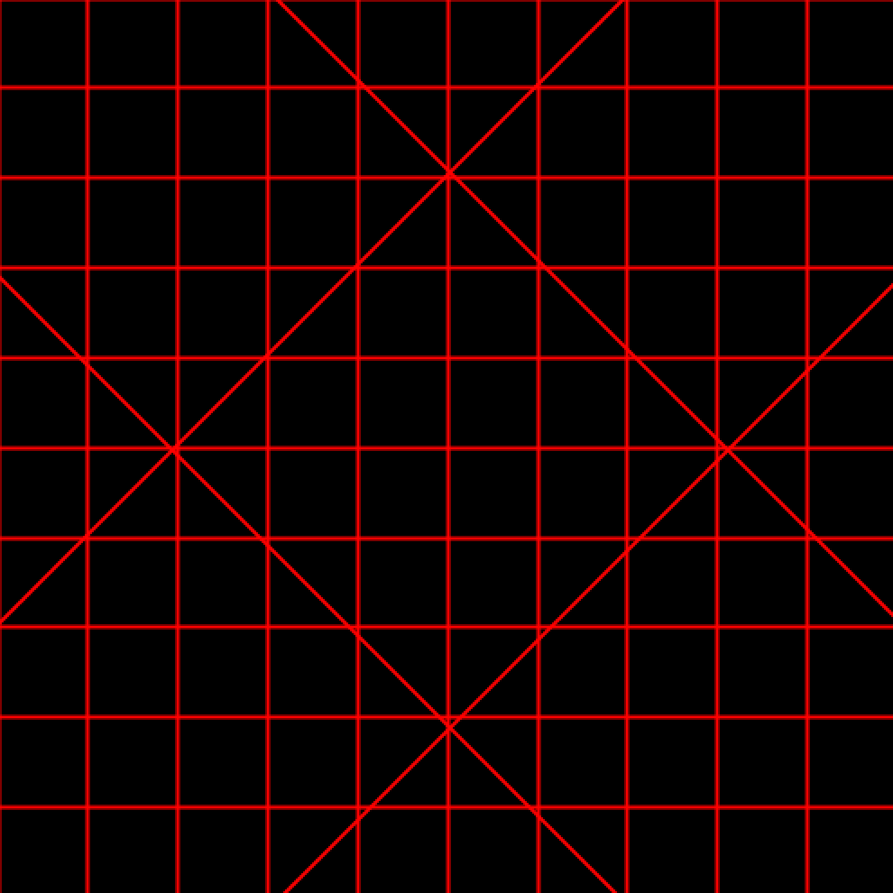
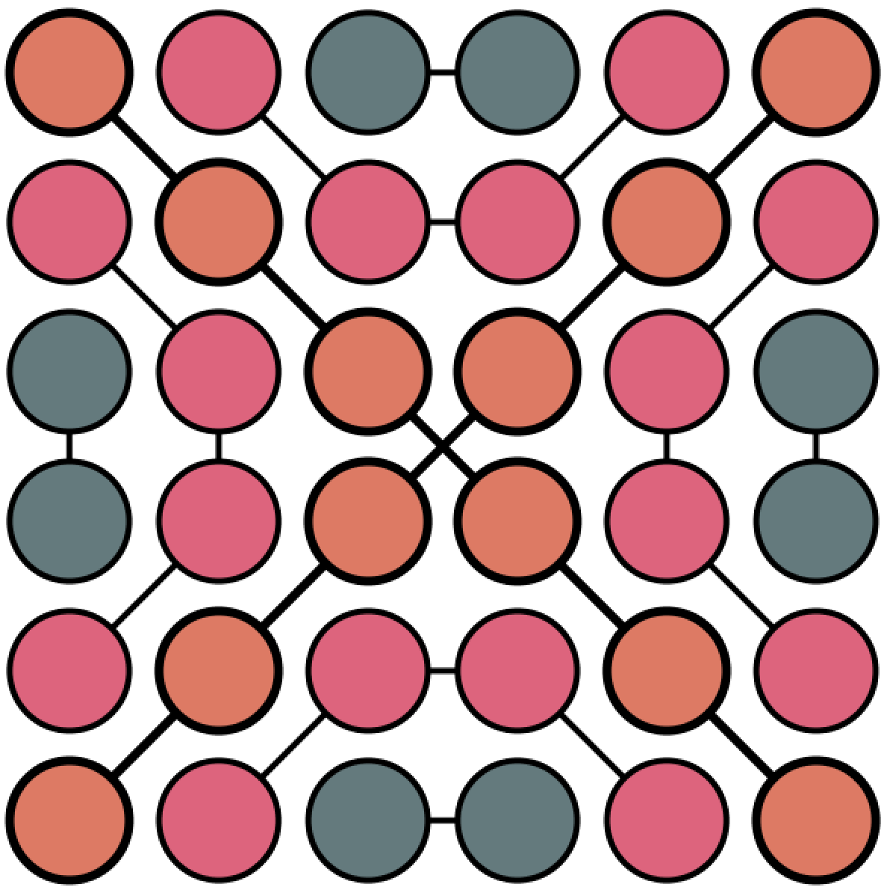
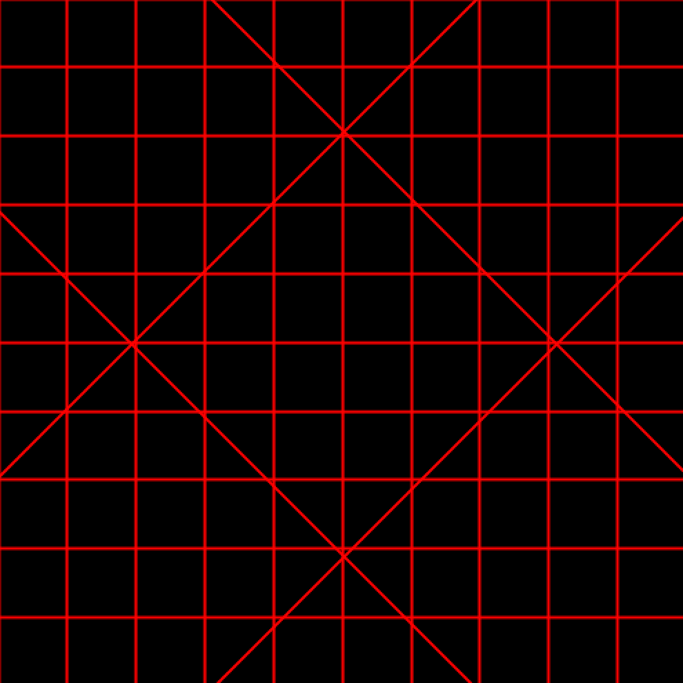
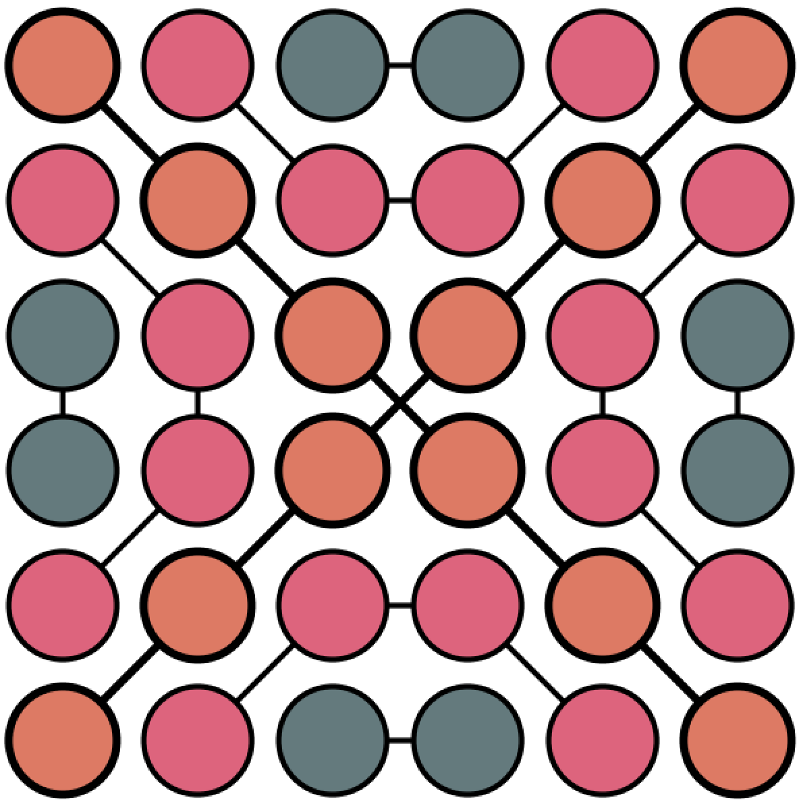

Projects
2019
In November 2019 we had a programming bootcamp. Within a week we learned how to use processing. Each day we dove deeper into the programming language so we could make more complex things each and every day. After learning new things, we also had to make an assignment. The next three pictures are examples of the assignments.
In the first picture you can see my final assignment. I made a sketchbook where people can place own figures and lines by drawing onto the page. Different keys have different figures or colors that will appear when you press them. This way the users of this code will have a lot of freedom when it comes to what they want to do with the code. It opens up a lot of creativity for the people that use this program.
The second example was from earlier in the bootcamp. We had to make a code that was an interactive design. I wanted to make it minimalistic so I only used black and red. The diagonal lines more diagonally the whole time and loop when they are off screen. The vertical and horizontal lines are linked to the mouse position, so it is interactive to the user. An inspiration for this design was Mission Impossible. The red lines kind of look like lazerbeams and the black background has some mystery in it.
The last example in the pictures is one from the bootcamp as well. In the code there are some random values that make colors of the circles different each time you run the code. The thickness of the lines will also change each and every time you run the code. This was because the design should stay the same, though every time something different should happen.
 


